收录于合集

政治学专业最基础的15本读物
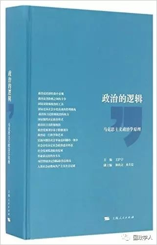
1
《政治的逻辑》
王沪宁 主编
上海人民出版社; 第1版 (2016年10月1日)
简介：
国内对马克思主义研究的著作各种各样，涉及领域也十分广泛，但至今很少有一本专门研究马克思主义政治思想和理论、并将其上升到原理高度的著作。为了填补这方面的空白，丰富马克思主义的研究，我国著名的政治学家王沪宁任主编、复旦大学政治学教授林尚立、孙关宏任副主编，编著了本书。本书在充分把握历史唯物主义和辩证唯物主义基础上，根据分析社会政治现象和政治规律的基本思想逻辑，全面、系统地展现了马克思主义政治学原理。
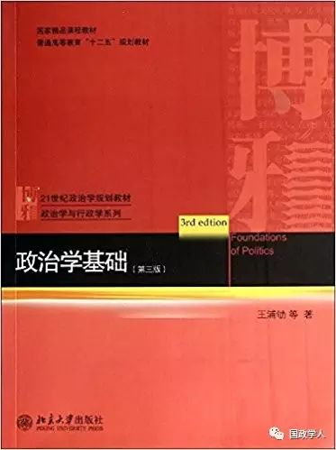
2
《政治学基础》（第三版） **** **** ****
**
**
王浦劬 等著
北京大学出版社; 第3版 (2014年5月1日)
简介：
《普通高等教育"十二五"规划教材·21世纪政治学规划教材·政治学与行政学系列:政治学基础(第3版)》根据这一政治哲学方法论意义，本次修订所做的国际政治编续增，实际使得此书发生了一定意义上的结构性变化，即从原有的理论一体化整体逻辑结构，演变成为“理论逻辑+样本分析”的框架结构。也许这样的续增可能会损害政治理论的哲学纯洁性、思维抽象性和逻辑整体性，不过，从政治哲学与政治科学结合、一般政治与国际政治结合的意义上，这种结构性变化，也许不无新颖的学术尝试。
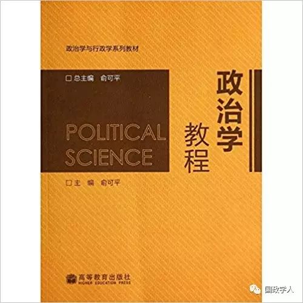
3
** 《政治学教程》** ****
俞可平 主编
高等教育出版社; 第1版 (2010年2月1日)
《政治学教程》是政治学与行政学系列教材之一，由我国著名政治学家俞可平教授主编，参编作者几乎都是政治学科的知名学者和博士生导师。
全书力图突出科学性、学术性和和前沿性，尽量向学生展示政治学作为一门独立科学的系统知识；力图反映政治学的历史发展和最新成果，尽量向学生展示政治学作为一门古老而新生的学科的历史与现状；力图将学术性与现实性尽可能地结合起来，尽量向学生提供观察和分析现实政治生活的知识工具。本书可作为大学政治学与行政学专业的基础教材，也可供行政管理、思想政治教育、法学等相关专业使用以及社会读者阅读。
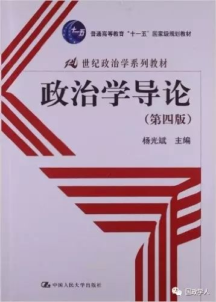
4
** ** 《政治学导论》**** ****
杨光斌 主编
中国人民大学出版社; 第4版 (2011年11月1日)
本书依然本着“政治的性质——政治意识——政治体系——政治行为——政治发展”的逻辑体系而展开。本次修订不但充分吸收最新的学术成果，直面一些不容忽视的现实问题，如国家建构中的民族问题与阶级问题、经济发展与政治民主的关系、现代化中的腐败、民粹主义与风险社会等，而且还提出一系列反思性理论问题。
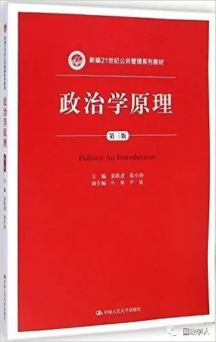
5
** ** ** 《政治学原理》****** ****
景跃进, 张小劲 主著
中国人民大学出版社; 第3版 (2015年1月1日)
《新编21世纪公共管理系列教材:政治学原理(第3版)》依据导论、硬件、软件、联系机制、演化这一逻辑脉络，系统阐述了政治学的基本概念和理论。全书分为五篇：第1篇讨论了政治与政治学的一般性问题，回答了“如何理解政治”、“如何研究政治”两个基本问题；第2篇详细探讨了政治系统的硬件，即国家机器与政府设置，内容涉及国家与超国家政治、代议机关、行政部门、司法机关和武装力量；第3篇分析了政治系统的软件，阐释了意识形态的性质和功能，介绍了当今世界主要的意识形态理论，并对政治文化与社会资本以及它们之间的关系进行了研究；第4篇从政治沟通与政治参与、政党与政党制度、利益集团三个角度来考察政府与人民之间的联系机制；第5篇着眼于政治过程的演化和发展，探讨了政治发展研究的历史演进、人权与公民权利、政府治理方式的变革、民主与民主化等问题。与一般的政治学教材不同，此书特别强调政治与政治学研究的多元化视角，全书在以简要方式勾勒政治学的研究主题、研究方法和基本知识的同时，还试图揭示其内在的复杂性，力图反映不同研究取向和不同研究风格对政治学的贡献，并鼓励读者以多维视角理解政治和政治学的基本概念与基本问题，以审视的眼光迎接不同的观点，在多样性中学会辨析和反思。
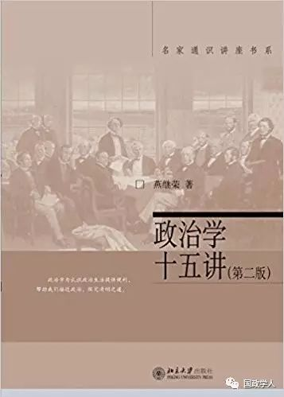
6
** ** ** 《政治学十五讲》****** ****
燕继荣 著
北京大学出版社; 第2版 (2013年1月1日)
《政治学十五讲（第二版）》主要分为两大部分：第一部分介绍政治学的重要概念、方法和理论，包括政治学的学科知识体系、政治学研究的基本概念和范畴、历史与现状、途径与方法等内容；第二部分介绍政治研究的多种视角，包括政治价值体系分析、权力分析、合法性分析、结构分析、制度分析、文化分析、行为分析、决策分析、国际分析、发展分析等内容。初版2004年由我社出版，此次根据教学实践修订部分内容：一是重新提炼各讲内容，修改了章节标题，对文献和书目做了补充订正；二是本着精简原则，删减了个别章节的部分段落和"焦点讨论"的篇幅；三是基于中国政治学研究的语境及其所关注的热点问题，补充了相应的内容。
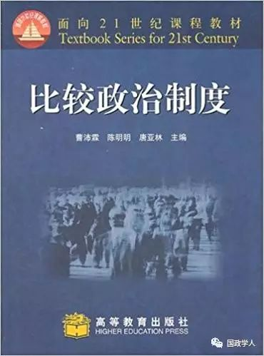
7
** ** ** ** 《比较政治制度》******** ****
曹沛霖、唐亚林、陈明明主编
高等教育出版社; 第1版 (2005年1月1日)
《面向21世纪课程教材:比较政治制度》为教育部“高等教育面向21世纪教学内容和课程体系改革计划”的研究成果，是一部讨论当代世界各主要政治制度的教材。全书各章从理性价值和工具价值的视角出发，以现代民主制度的原则为切入点，对当代世界主要类型政治制度的基本内容、主要特色和发展趋势进行纵向和横向比较，并对政治制度形成和运行的社会、经济、政治和文化背景进行较为全面的描绘，旁征博引，视野广阔，脉络清晰，论述系统，有助于读者在比较分析中更深入地了解各国政治制度的基本情况，以及进一步认识我国政治制度?优点和特点。《面向21世纪课程教材:比较政治制度》可作为高等院校政治学与行政学专业的教学用书，也可供相关专业选用和社会读者学习。
8
** ** ** ** ** 《现代西方民主的困境与趋势》********** ****
佟德志 著
人民出版社; 第1版 (2008年9月1日)
本书系统地分析了现代西方民主的种种困境，并以宪政民主、资本民主、文化问民主为构架揭示了西方民主在政治、经济、文化等领域的多种因素作用下进行调适而发展形成的基本样式。本书以民主为切人点，运用马克思主义政治学理论和方法，贯通政治、经济、文化等学科和研究领域，展开有理有据的透彻论析，其研究有助于我们准确认识现代西方民主的总体特征与趋势。本书立论独到，逻辑清晰，论析深入，视野开阔，是西方民主制度和理沦研究少有的力作，对我国的民主政治理论和实践的发展亦有启发和借鉴意义。
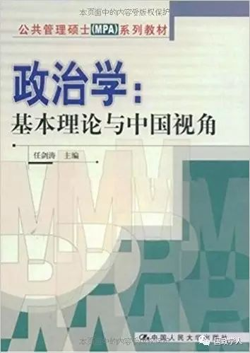
9
** ** ** ** ** ** 《政治学:基本理论与中国视角》************ ****
任剑涛著
中国人民大学出版社; 第1版 (2009年2月1日)
《政治学:基本理论与中国视角》循着政治结构分析的进路，从勾画政治学轮廓入手，对政治生活的价值层面、文化构成进行叙述，接着对政治制度、政策过程进行解析，再就是对政治组织与政治生活进行描述。政治学虽然烙有明显的西方学理印记，但是处于转变时期的中国需要其现代的观念、制度设计和生活指引，这就要求人们在从事政治学研究时，必须将西方学理、中国传统与当下需求紧密集合起来。此外，每章最后都提供了可进一步阅读的的书目和一个引人思考的案例，以便读者将枯燥的理论论述与有趣的政治实践联系起来，增加阅读兴趣。
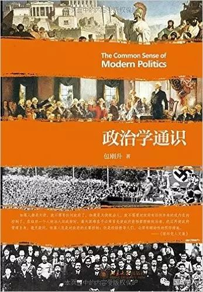
10
** ** ** ** ** ** ** 《政治学通识》************** ****
包刚升 著
北京大学出版社; 第1版 (2015年11月1日)
本书是作者在复旦大学政治学课程讲义的基础上修改润色而成的。本书力求成为一部通俗易懂、深入浅出的政治学普及入门读物。这部书正是为那些对政治和公共事务感兴趣的读者朋友们而写的。通过本书，作者希望能够帮助读者加深对中国政治与世界政治的认知，帮助读者理解政治学领域的重大议题、主要理论与基本方法，帮助读者养成健全与系统的政治思考能力。
11
** ** ** ** ** ** ** ** 《当代政治学十讲》**************** ****
阎小骏 著
中国社会科学出版社; 第1版 (2016年12月1日)
阎小骏著的《当代政治学十讲》是一部对于当代政治学学科的总体性和基础性的介绍。本书从政治学的基本研究方法和解释路径起笔，依次介绍了当代政治学八个主要领域的基础知识，包括发展理论民主理论、政权组织、国家理论、政治参与理论、市民社会理论、社会运动理论和政治、认同理论，基本涵盖了当代政治学的主要研究范畴。通过阅读本书，读者可以比较方便地了解当代政治学作为一门社会科学学科的大致轮廓、主要概念、基本理论脉络和方法论，借此掌握当代政治学的入门门径，为进一步的学习和深造打下良好基础。
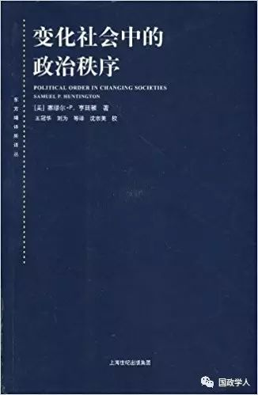
12
** ** ** ** ** ** ** ** ******************** 《变化社会中的政治秩序》
塞缪尔·P·亨廷顿著 王冠华刘为等译
上海人民出版社; 第1版 (2008年7月1日)
《变化社会中的政治秩序》凝住的关于发展中国家的知识广度和分析洞见是惊人的，并确立了亨氏作为他同时代人中最杰出政治学家之一的声誉。首先，亨廷顿论辩说，政治衰朽至少和政治发展一样可能发生。新近独立国家的实际经历是一种愈演愈烈的社会和政治混乱。其次，他提出，现代性中的好东西常常向交错的目标运动。特别是在社会动员超越政治机构发展时，新的社会行为者发现他们无法参与政治而产生挫折感。其结果便是亨氏名之为“普力夺主义”(praetorianism)的状况，也是导致反叛、军事政变以及软弱和组织不力政府的主要原因。经济发展和政治发展不是同一事物的严丝合缝的组成部分。后者随着诸如政党和法制系统之类组织的设立或衍变为更复杂的形式而具有自身的、另类的逻辑。
、
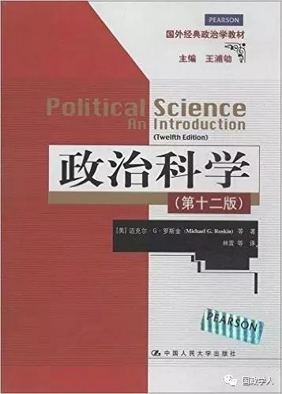
13
** ** ** ** ** ** ** ** ******************** **** 《政治科学》
迈克尔·G·罗斯金 等著 林震 等译
中国人民大学出版社; 第1版 (2014年4月1日)
这是一本主题宏大抽象、语言通俗易懂、内容直击要点、广受国内外读者喜爱的政治学教科书。作者紧扣政治学的基本概念，以方法论贯穿全书，同时运用丰富、真实的案例，将思考政治的方式、个人与政府的关系、政治参与的价值娓娓道来，向读者展示了一个与生活密切相关的生动的政治学理论谱系。
本书的另一大特点是作者持论的公允，全书“采用兼容并包的方法，避免兜售任何单一的理论、概念框架和范式”，以科学、客观的态度分析不同的意识形态和政治体系，在首肯美国民主体制的同时，更一针见血地批判了美国现实政治的弊端。无论读者持有何种观点，本书都具有重要的参考价值。本书已成为高校相关专业学生的必读书目，同时也是政治学学者和政府官员的重要参考书。
14
** ** ** ** ** ** ** ** ******************** **** **** 《权力与选择：政治科学导论》
W.菲利普斯·夏夫利 著 孟维瞻 译
世界图书出版公司北京公司; 第1版 2015年10月1日
作为一本政治知识普及读物，本书的特点在于，从“权力”与“选择”两个角度来剖析解读政治，通过这条主线，将零碎的知识组合成完备的政治学体系。作者从政治的概念、国家与公共政策、公民与政体、国家机器、国际政治这五方面入手，引导读者全面详尽地理解政治学的知识领域。此外，作者针对读者的兴趣点，阐述了国家政治的运转细节，剖析了政治精英们管理国家的过程，关于国家政治你需要知晓的知识都囊括在本书里：现代国家源何诞生，国家制定政策时需要考虑哪些因素，怎么看待公平与效率问题，国家政体怎样作用于选举制度，而选举制度又如何影响政党构成。
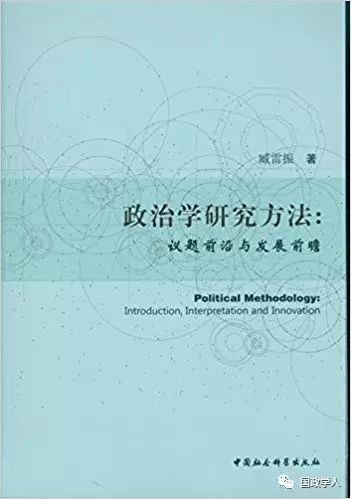
15
** 《政治学研究方法:议题前沿与发展前瞻》**
臧雷振 著
中国社会科学出版社; 第1版 (2016年1月1日)
《政治学研究方法:议题前沿与发展前瞻》涵盖对20世纪中后期到21世纪初期以来，政治学研究中若干方法论发展方向的争论，如是否存在“方法论的误导”和“方法意识导向研究挤压问题导向的研究”等；以及政治学传统研究方法中被忽略的议题，如定性研究中的“案例选择性偏差”、定量研究中的“变量选择性偏差”、方法论融合过程的“方法选择偏差”等；同时，针对政治学研究方法在21世纪新进展进行了全面概括性解读和分析，如正在兴起的政治学实验研究方法、混合研究方法、大数据分析对政治学研究方法建构的影响等。
编辑：米金金

Alfred、晞哲
微信扫一扫赞赏作者 __赞赏
已喜欢，对作者说句悄悄话
取消 __
发送给作者
发送
最多40字，当前共字
上一页 1/3 下一页
长按二维码向我转账
受苹果公司新规定影响，微信 iOS 版的赞赏功能被关闭，可通过二维码转账支持公众号。